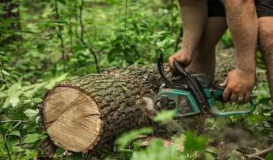

Straight Answers on Land Clearing
The questions Louisiana property owners actually ask us, answered in plain language: what clearing costs, when permits matter, how forestry mulching works, and how to get a lot build-ready. No fluff, no scare tactics, and when the honest answer is "walk the land first," we say so.
Costs & planning
Money Questions

How Much Does Land Clearing Cost in New Orleans?
What actually drives the number: lot size, growth density, access, and haul-off.
Read the article →
How Much Does It Cost to Clear 1 Acre in Louisiana?
Why two identical acres can be very different jobs, and what to look at on yours.
Read the article →
How Long Does It Take to Clear a Lot?
The honest factors behind every timeline, from a city side yard to wooded acreage.
Read the article →Rules & ground truth
Permits, Wetlands & Timing

Do You Need a Permit to Clear Land in New Orleans?
When clearing or demolition can need parish paperwork, and how to find out before a machine rolls.
Read the article →
Can You Clear Land Near Wetlands in Louisiana?
What a drainage-aware clearing job looks like, and what should stay untouched.
Read the article →When Is the Best Time of Year to Clear Land?
Seasonal trade-offs in southeast Louisiana, and the one deadline that matters most.
Read the article →Methods & projects
Mulching, Trees & Build Prep

What Is Forestry Mulching and How Does It Work?
One machine, one pass, and a natural mulch layer instead of burn piles and haul trucks.
Read the article →
Forestry Mulching vs. Traditional Land Clearing
Two very different ways to clear the same lot. Which fits your land and your plans.
Read the article →
What to Do With a Storm-Damaged Tree
Leaners, cracked limbs, lifted roots: how to read the damage and when to call.
Read the article →

Rather Just Ask Us Directly?
Call and tell us about the property. Estimates are free, fast, and accurate.